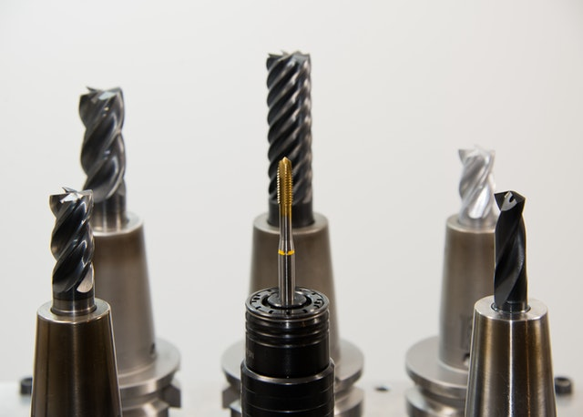

How to Hang a Shelf
Step 1
Find the location for your shelf
Step 2
Find the studs in your wall using a stud finder, and mark the locations
Step 3
Place a level between the stud markings. Draw a line across the top of the level to mark where the shelf should sit.
Note: Ensure the level mark reaches the stud marking on both sides for more accurate guidepoints
Step 4
Use a drill or screwdriver to install the shelf brackets on the marks
Step 5
Install desired shelf material on top of the brackets and secure them
Step 6
Double check the final product with the level
Shelf Hanging Demonstration
Video Transcript
wall shelves are a stylish, practical way to maximize storage in any space. Here's what you'll need to properly secure one to the wall. First, determine the shelf's location. You want your new shelf to be sturdy and level so proper placement is key. If the shelf is heavy, or you plan on storing bulky items it's best to install the hardware directly to wall studs. If a stud is unavailable, you'll need to install appropriate wall anchors for the job. Next, pull the shelf in place and make a light line along the underside. then using the line as a reference, position each bracket and mark the location of the hanging hardware. [Music] Now using a drill on low speed. or a screwdriver make starter holes into your marks without fully installing the screws to secure the brackets. You'll need to back out each screw and set it aside. Install a drywall anchor if necessary before attaching the bracket. Now place the bracket in position and fasten it to the wall. [Music] Finally, Center the shelf atop the brackets. Then for added security, fasten the shelf to the brackets good luck and thanks for shopping at the Home Depot